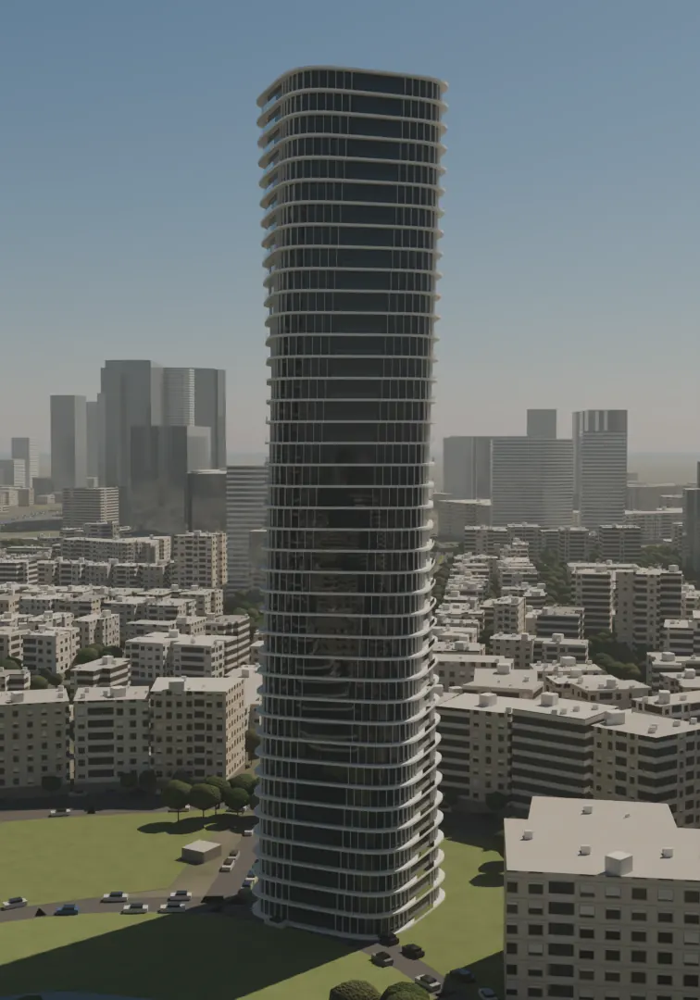

כיכר המדינה
תל אביב · 2 דירות לדוגמה במגדל
דוגמה
דירה לדוגמה ב
קומה 30
דירה לדוגמה א
קומה 20
הדמיה · דירות ונתונים לדוגמה
דירה לדוגמה א · קומה 20
שכר דירה בעוד 3 ימים · סכום לדוגמה
להיכנס לדירה
דירה לדוגמה א
כיכר המדינה · קומה 20
דוגמה
!
✓
✓
הדמיה · דירה ונתונים לדוגמה
הדירה
המערכות
היום
המזגן לא מקרר
יום 2 מתוך 30 · לחצו על המזגן
לטפל עכשיו